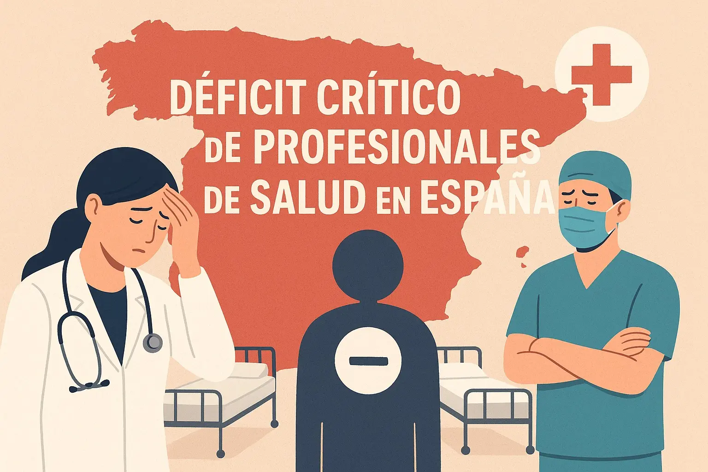

El Problema: Déficit Crítico en España
España tiene una de las ratios más bajas de enfermeras por paciente en Europa, con casi 3 profesionales menos por cada 1000 habitantes.
España tiene una de las ratios más bajas de enfermeras por paciente en Europa, con casi 3 profesionales menos por cada 1000 habitantes.
Hemos creado el primer puente legal y ágil que conecta hospitales españoles con talento internacional, optimizando tiempos de gestión.
Filtramos por competencias técnicas e idioma para garantizar el mejor ajuste a la cultura hospitalaria.
Nos encargamos de todo: homologación, visados y la Autorización Excepcional para Ejercer.
Asesoramos en la llegada a España: trámites iniciales y alojamiento temporal.
Realizamos un seguimiento constante para asegurar una integración exitosa del profesional.
Si cuentas con un título en alguna de estas áreas, en NexoSanidad podemos gestionar tu proceso legal y laboral.
Nota importante: Los tiempos de respuesta del Ministerio varían según la profesión. Consulta tu caso particular aquí.